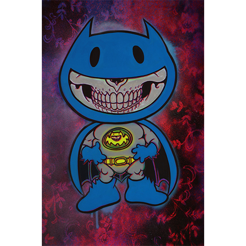
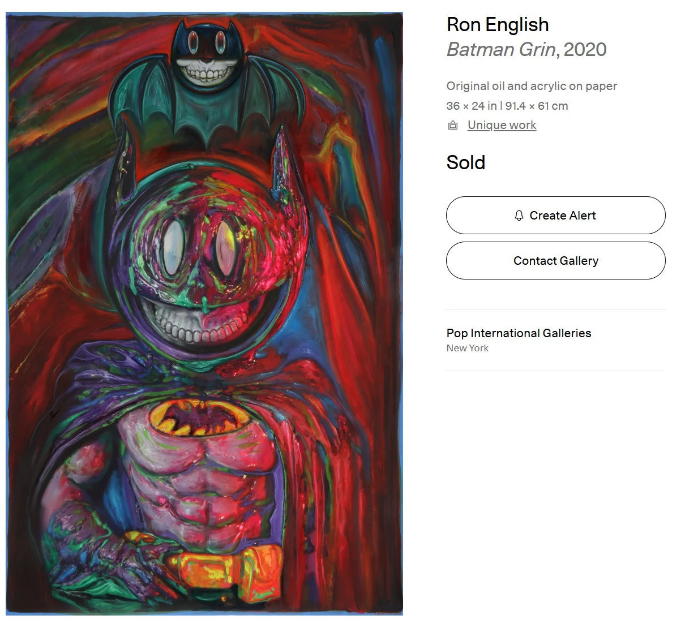
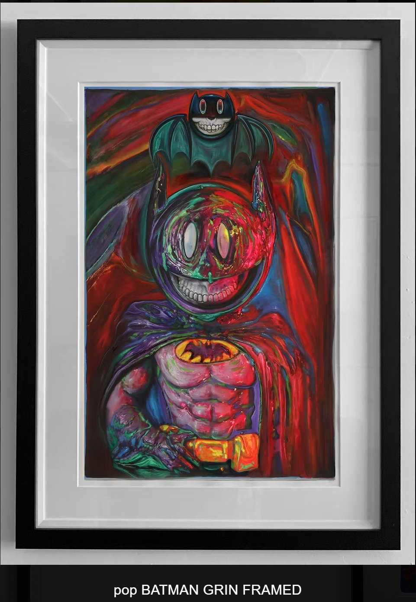

Exhibitions
POPaganda on Paper, Pop International Galleries, virtual exhibition, September 17–October 15, 2020.
Notes
This work appears on Artsy’s artwork page as Batman Grin, where it is listed as a 2020 original oil and acrylic on paper measuring 36 × 24 inches (91.4 × 61 cm), unique, and hand-signed by the artist, available here, accessed April 17, 2026.
It also appears on Pop International Galleries’ Ron English page, available here, accessed April 17, 2026.
Pop International Galleries also documents the work on its product page, available here.
The composition references DC Comics’ Batman; a representative image is available here.
Ancillary Documentation

